JURUS Secure Healthcare System
A healthcare management system, built and secured for the JURUS Cyber Engineer Challenge.
Competency: Level 1 - ANALYST
JURUS Cyber Engineer
Learn by building. Prove by doing.
I was selected to be a part of the first cohort of the JURUS (Jurutera Siber rawSEC) Cyber Engineer Program, organized by rawSEC/MCCO and the Cyber Research Center (CYRES), Universiti Sains Malaysia (USM). This Program has 3 levels:
- Level 1 - ANALYST
- Level 2 - PROFESSIONAL
- Level 3 - SPECIALIST
JURUS is a competency-based cybersecurity engineering program and this level evaluates participants based on 6 domains/areas:
- System Engineering and Design
- Network Security
- Application Security
- Database Security
- Security Management
- Business Resiliency
The program is more of a competency pathway for cyber engineers where participants are assessed through real-world, practical engineering tasks, live demonstrations, troubleshooting, technical reports, and oral defense. I believe this sets it apart from other types of challenges since it does not just rely on training or exams. We were expected to design a system and build it, then harden it with security measures where we can, following each domain.
The Challenge
An analyst in the making.
So that's JURUS. Cool. But what did I have
to actually do for this level? Before
diving into my task, I would like to point out what was
prepared by the organizer for the participants. The program
started with a crashcourse that talked about the JURUS
program (mission, vision, goals, etc) and the 6 focus areas. This
felt more like a knowledge-sharing session since it went through
a lot of fundamental aspects of security, since the 6 domains cover
the basics of securing any model.
After that, there was another talk
on the evaluation process of the program. The 100-point system is
divided into 2 parts: report write-up and presentation. Each part
was worth 50 points each. A sample report was given to the cohort as
a reference point to let us know what was expected to be included in our
report. Personally, I don't mind writing a lot. You know what was nerve-racking?
The presentation portion. A general overview of our design (plus reasoning/justifications),
a demo on how it works, proof of security measures and the scariest part,
a stress test. That was scary, but the scare made it fun (i'm not a masochist i promise).
After the crashcourse, we were emailed 3 different scenarios that
we can respond to. One was about building a public healthcare platform,
another one is about building a university research collab portal
and the other one is about building a warehouse operations management
system. 3 different scenarios covering 3 different industries
that reflect real-world needs. We had to choose one. I chose the one with the
healthcare theme, because this industry seems to need more security (all critical
infra matter, just that healthcare gets hit a lot with ransomware and TAs get away with it, GD thieves). The
similarity in these 3 assignments is that our role here is the lead cyber engineer and
that, in these situations, an existing system serving its
purpose is already there, just not secure enough. Our job is to design
a new system with security in mind, top to bottom. From infrastructure
to user data.
The System
Oh man.
Great, now you guys know what this is about and what I need to do.
The fun part begins: actually doing things. The following is what
I have decided and implemented for my platform across all 6 domains.
Infrastructure
DOMAIN 1: System Engineering and Design
Operating System
Application
Database
Containerization
Web Services
Domain & DNS
Architecture
DOMAIN 2: Network Security
Cloud Network
- AWS Security Groups
- UFW
- default-deny inbound policy
- Fail2Ban
- SSH bruteforce protection
- HTTPS/TLS with CertBot (Certbot)
- SSH hardening
- Key-based authentication
- Nginx reverse proxy
- Hidden server version banner
- Security headers
DOMAIN 3: Application Security
Authentication
- OpenEMR staff MFA
- Role-Based Access Control (RBAC)
- X-Frame-Options
- X-Content-Type-Options
- Referrer Policy
- Permissions Policy
- Hidden Nginx version
- Protected document directories
- Idle Session Timeout (4 minutes: staff, 5: minutes patient portal)
- Minimum 14-character strong password requirement
- HTTPS-only access
- Unique password requirement (3 rotations)
- Maximum failed login attempt (3)
- Time to reset attempt (5 minutes)
DOMAIN 4: Database Security
Access Control
- Least-privilege database account
- Restricted application user
- Environment variables (.env)
- Docker persistent volumes
- Database privilege validation
- System database access restriction
DOMAIN 5: Security Management
System Monitoring / Visualization
- Grafana
- Prometheus
- Loki
- Promtail
- Portainer
- UFW Logs
- Nginx logs
- Docker logs
- Linux system logs
- Log rotation
DOMAIN 6: Business Resilience
Backup
- MariaDB SQL backup (mysqldump)
- Docker Container backups
- Bash backup script
- Cron scheduling
- AWS EC2 (Ubuntu Server / local)
- AWS S3 (Bucket / off-site)
- External Hardrive (physical / offline)
- Data backup: 1 day
- Container backup: 7 days
Since I underestimated the amount of time needed to finish the project, admittedly, I did not have enough time to polish certain aspects. I did not work on much for the Business Resilience domain. Given more time, I may make a complete BIA, BCP and simulate a disaster so that I can thoroughly test my backups and to record RTO. Also to see if I can actually rebuild my system from the ground up if my entire infrastructure were to go down.
I don't think I will go through individual features and screenshots, but since I did have to write a report on this, I'll leave that here instead. The report should explain the entire system, including justifications and other details. At the end of this page, I also have a photo gallery that showcases some of the pictures I have of the experience, inlcuding the network diagram! [dont share your network diagram, people]. All in all, solid base system with a huge, scalable potential.
Results
Worth it, no regrets.
I passed! (the badge looks neat). On the day of the commissioning/award ceremony, we had to sit in ranks, from first to last. Due to the fact that not everyone attended, my name was called second but I know for a fact I'm not ranked second. Maybe (hopefully) top 5? (Update: 4th place, baby) Scores and rankings were not disclosed on our credential badges or given records. Honestly, definitely worth the hustle. The ceremony was held at the National CyberSecurity Summit (NCSS) 2026, Putrajaya International Convention Center (PICC) organized by the National CyberSecurity Agency (NACSA). I got to join in as a conference delegate! Aside from conferences that dicussed security topics, there were exhibitions that showcased a ton of cool stuff (like a military grade cyberdeck-style proxy for secured comms).
The entire day after the event was filled with talks and networking opportunities. The chairman of rawSEC/MCCO, Ts. Tarhizi Tahreb (the same guy that's also the CISO for Bank Rakyat) attended and officiated the award ceremony. On stage, him and NACSA's Chief Executive, Ir. Dr. Megat Zuhairy Megat Tajuddin, were present to hand the awards.
Funny story: the CE asked me how old I was. He was shocked to hear how young I am. Wait until he hears about that JURUSan that just sat for their SPM XD
Gallery
I had a blast. Here are some shots I have with me (im a bit paranoid so i'll share what i can hahahah [again: never a good idea to expose your network diagram, never do this [yes, including me. its just that this isn't a legitimate system for a healthcare org lol]]).
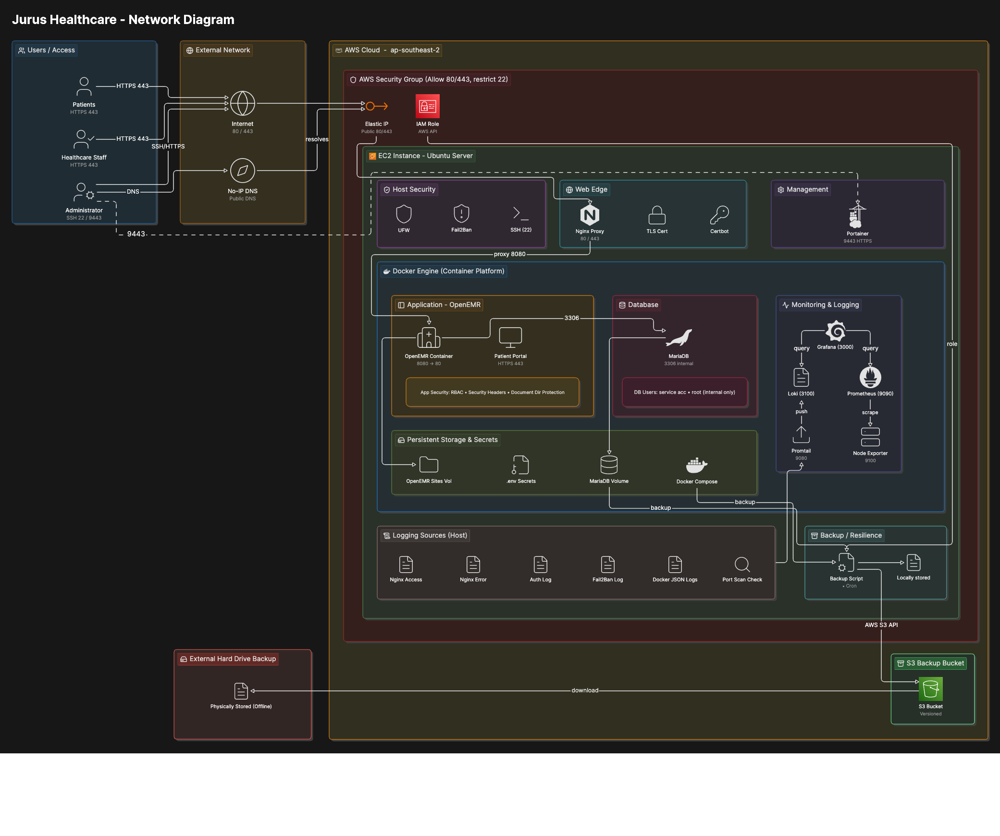
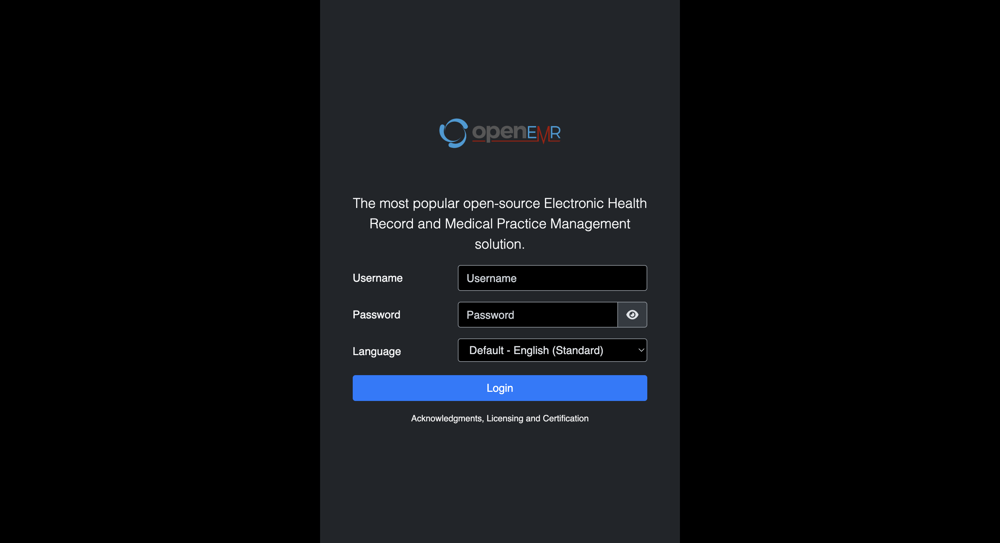
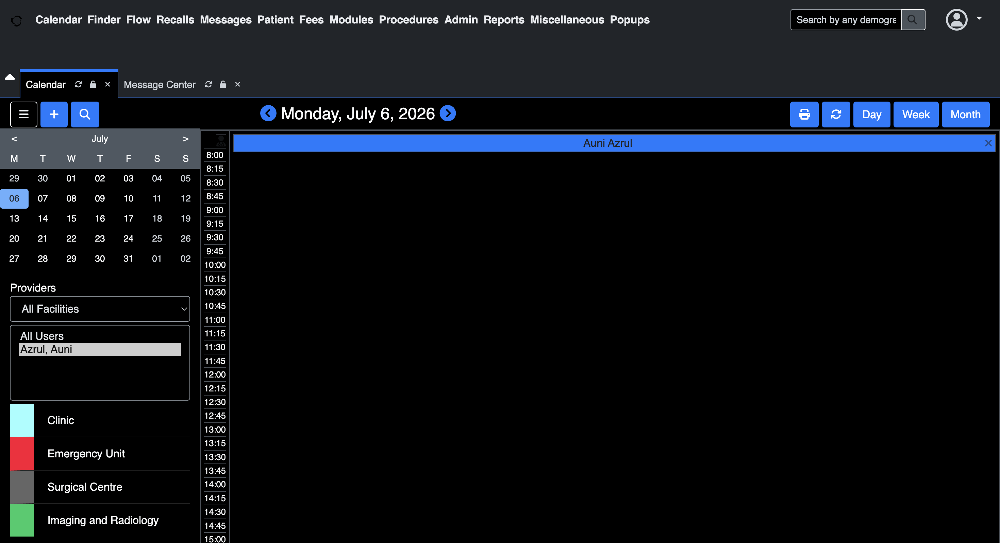
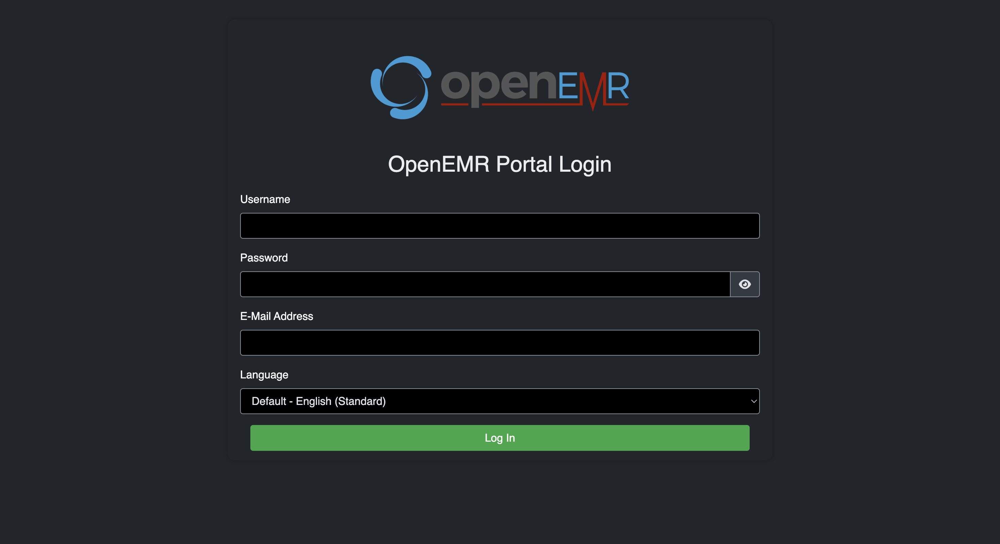
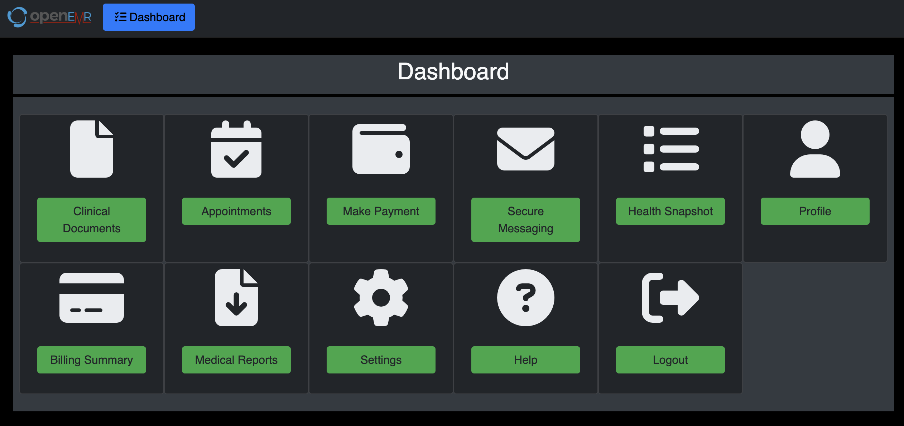
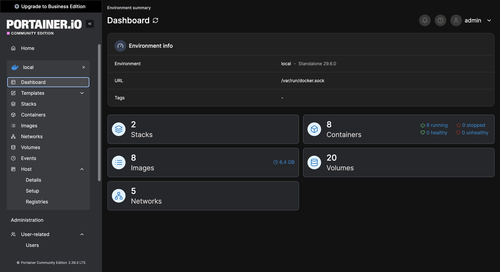
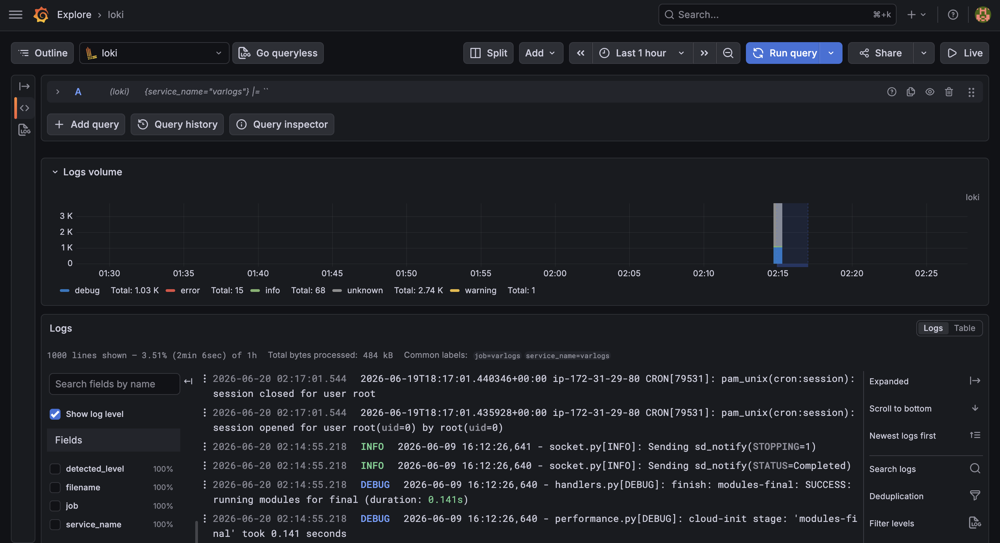
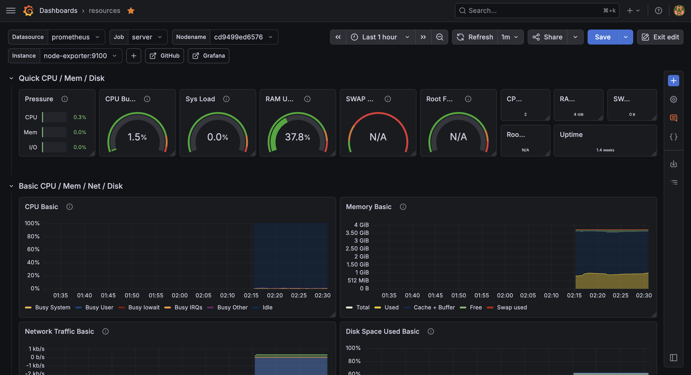
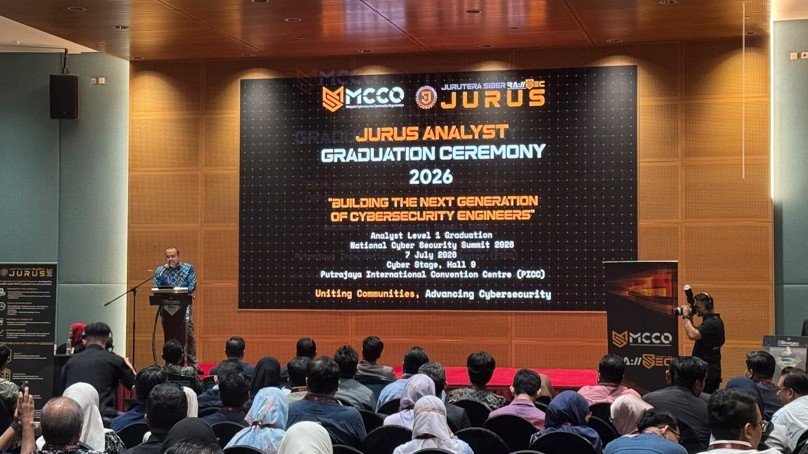
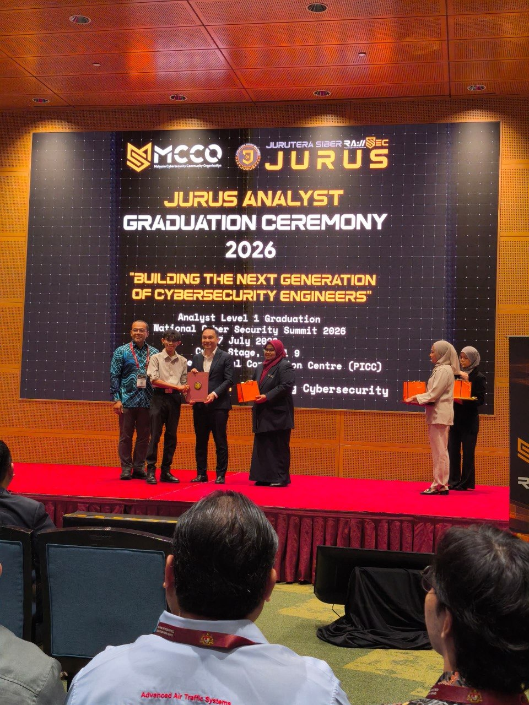
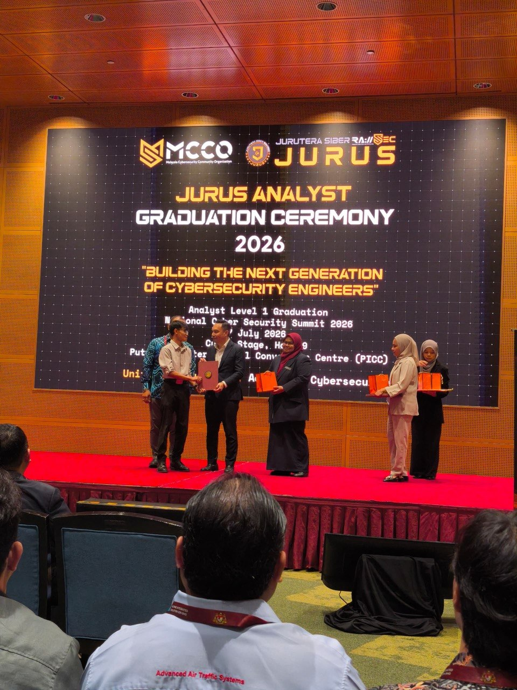
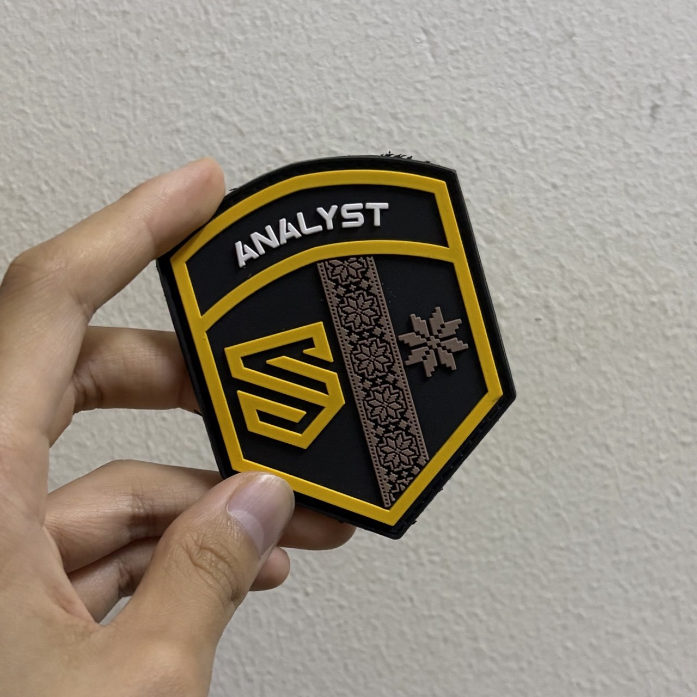
Final Thoughts
120 applicants. 92 participants. 50+ submitted reports. 30+ passed. Great job, everyone.
I would like to give a huge thank you to the amazing people over at rawSEC/MCCO, CYRES and the JURUS Governing Council for organizing, moderating and overall managing the program. It isn't a small, simple challenge. As a participant, I could see just how much effort was put into successfully hosting something of this scale. And you guys did it all without pay. Incredible. I personally owe you guys big time.
As of right now, there has not been any news regarding another ANALYST cohort, but according to rawSEC/MCCO Vice Chairman, Ts. Khairul Nadzmi, a new cohort for the PROFESSIONAL level may start in the 4th quarter of this year, maybe around October or November. The ones that will be engaging into L2 will only be the ones who have passed L1.
Honestly, this entire experience was like nothing I have seen or heard about before. It is not some CTF or cyberbattle where you use ready made tool to monitor or attack, instead it asks you to build (really similar to hackathons, just... cyber lol). It was an engineering challenge made to test how capable you are with designing, building, securing and managing a system. That is something I thought I could never do alone. Through this challenge, I am glad to say I have successfully pushed my own limits. While doing so, I have learned a whole lot more about cyber engineering an entire platform. I look forward to joining the next cohort for L2. Can't wait.